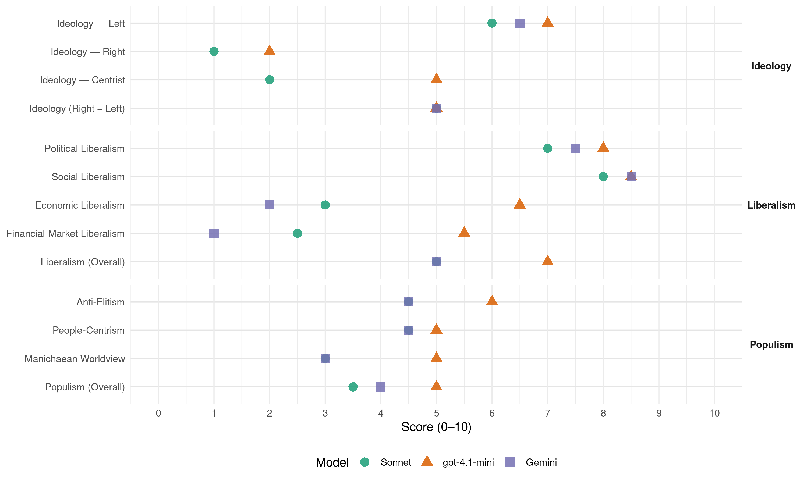

EÉLV (France, 2012)
manifesto_id 31110_201206
Get full text: This site shows derived annotations and short verbatim quotes only. The full manifesto text is © Manifesto Project / WZB — obtain it via manifesto-project.wzb.eu using the manifesto_id above.
Headline scores
| Dimension | Sonnet | gpt-4.1-mini | Gemini |
|---|---|---|---|
| Populism (Overall) | 3.5 | 5.0 | 4.0 |
| Anti-Elitism | 4.5 | 6.0 | 4.5 |
| People-Centrism | 4.5 | 5.0 | 4.5 |
| Manichaean Worldview | 3.0 | 5.0 | 3.0 |
| Ideology (Right − Left) | 5.0 | 5.0 | 5.0 |
| Liberalism (Overall) | 5.0 | 7.0 | 5.0 |
| Political Liberalism | 7.0 | 8.0 | 7.5 |
| Social Liberalism | 8.0 | 8.5 | 8.5 |
| Economic Liberalism | 3.0 | 6.5 | 2.0 |
| Financial-Market Liberalism | 2.5 | 5.5 | 1.0 |
Evidence per dimension
Economic Liberalism
Gemini · score 2.0 · verified · chunk 1
“ne doit pas être monopolisée par le secteur privé”
En tant que bien commun, la production d’énergie ne doit pas être monopolisée par le secteur privé et relève d’une forte régulation publique.
Gemini · score 2.0 · verified · chunk 2
“encadrement des loyers et avant tout des”
accompagner l’accès au logement et au transport : encadrement des loyers et avant tout des petites surfaces par l’instauration d’un prix
gpt-4.1-mini · score 6.0 · verified · chunk 1
“libéralisation des marchés, soutien aux PME, fiscalité progressive”
une fiscalité soutenant les TPE-PME et les entreprises artisanales locales et écologiques : création d’un « bonus développement durable ».
gpt-4.1-mini · score 7.0 · verified · chunk 2
“taxation harmonisée des retraites complémentaires”
de mener des politiques sociales progressistes dans les domaines de l’éducation, les retraites, la fiscalité, la santé : politique des bourses ambitieuse, restructuration de l’Agence pour l’enseignement français à l’étranger ; réforme des conventions fiscales avec les pays de résidence ; taxation harmonisée des retraites complémentaires au sein de l’Union ; prise en compte des années hors de France dans le calcul de la retraite ; amélioration de la couverture médicale, etc.
Sonnet · score 3.0 · verified · chunk 1
“production d’énergie ne doit pas être monopolisée”
En tant que bien commun, la production d’énergie ne doit pas être monopolisée par le secteur privé et relève d’une forte régulation publique
Sonnet · score 4.0 · mixed · chunk 2
“sortir de la logique néolibérale des processus”
en sortant de la logique néolibérale des processus de Bologne et de Lisbonne pour créer un service public européen de l’enseignement supérieur et de la recherche.
Financial-Market Liberalism
Gemini · score 1.0 · verified · chunk 1
“séparer les activités de banque d’affaires et de banque de dépôt”
réduire la taille des banques et séparer les activités de banque d’affaires et de banque de dépôt. L’argent du contribuable ne doit en aucun
Gemini · score 1.0 · verified · chunk 2
“taxe européenne sur les transactions financières”
ressources propres de l’Union pour remplacer les contributions nationales des États membres. Ces ressources propres seraient : une TVA européenne, une taxe européenne aux frontières sur le carbone et un impôt sur les transactions financières.
gpt-4.1-mini · score 4.0 · verified · chunk 1
“interdire les versements de bonus et de dividendes pour les banques sous-capitalisées”
interdire les versements de bonus et de dividendes pour les banques sous-capitalisées. Simplifier et mieux superviser la finance.
gpt-4.1-mini · score 7.0 · verified · chunk 2
“la taxation des transactions sur les marchés des changes”
Pour les écologistes, cela passe par : -une fiscalité mondiale : la taxation des transactions sur les marchés des changes, financiers et boursiers, mais aussi des profits des multinationales, les déchets nucléaires, les transports aériens : 775 milliards de dollars hors taxe carbone peuvent ainsi être levés, soit deux à trois fois les sommes nécessaires à l’accès de tous aux droits fondamentaux et à la résilience climatique.
Sonnet · score 2.0 · verified · chunk 1
“interdire les CDS sur les dettes des États”
revenir sur l’« innovation financière » nocive et interdire les CDS sur les dettes des États
Sonnet · score 3.0 · verified · chunk 2
“taxation des transactions sur les marchés des changes, financiers et boursiers”
une fiscalité mondiale : la taxation des transactions sur les marchés des changes, financiers et boursiers, mais aussi des profits des multinationales
Political Liberalism
Gemini · score 7.0 · verified · chunk 1
“garantira le pluralisme syndical et l’ouverture”
abrogeant l’actuelle loi. Le gouvernement garantira le pluralisme syndical et l’ouverture à la société civile dans les inter-professions
Gemini · score 8.0 · verified · chunk 2
“respect des libertés civiques et des droits”
consolider les droits des Français de l’étranger : respect des libertés civiques et des droits des citoyens, notamment vis-à-vis des binationaux
gpt-4.1-mini · score 8.0 · verified · chunk 1
“le droit au départ à la retraite à 60 ans sans décote ni surcote”
la garantie du droit au départ à la retraite à 60 ans sans décote ni surcote. Les salarié-e-s ayant exercé des métiers reconnus comme pénibles bénéficieront d’une durée de cotisation plus faible.
gpt-4.1-mini · score 8.0 · verified · chunk 2
“le Parlement aux pouvoirs revalorisés”
un Parlement aux pouvoirs revalorisés, en lui permettant notamment de mieux maîtriser son ordre du jour et en développant sa capacité d’initiative législative, en supprimant la procédure d’adoption d’un texte sans vote (article 49 al. 3), en développant ses moyens d’évaluation des politiques publiques, en renforçant son contrôle sur la législation d’origine européenne (en limitant l’usage de la procédure des ordonnances pour transposer en droit interne les directives européennes).
Sonnet · score 6.0 · verified · chunk 1
“démocratie locale plus participative”
la mise en place d’une démocratie locale plus participative et ouverte à la diversité des populations
Sonnet · score 8.0 · verified · chunk 2
“généralisation de la proportionnelle à tous les scrutins”
la généralisation de la proportionnelle à tous les scrutins afin de tenir le meilleur compte possible du poids politique réel des différentes forces et d’assurer une parité effective des élu-e-s.
Liberalism (Overall)
Gemini · score 5.0 · verified · chunk 1
“garantira le pluralisme syndical et l’ouverture”
abrogeant l’actuelle loi. Le gouvernement garantira le pluralisme syndical et l’ouverture à la société civile dans les inter-professions
Gemini · score 5.0 · verified · chunk 2
“respect des libertés civiques et des droits”
consolider les droits des Français de l’étranger : respect des libertés civiques et des droits des citoyens, notamment vis-à-vis des binationaux
gpt-4.1-mini · score 6.0 · verified · chunk 1
“interdire les versements de bonus et de dividendes pour les banques sous-capitalisées”
interdire les versements de bonus et de dividendes pour les banques sous-capitalisées. Simplifier et mieux superviser la finance.
gpt-4.1-mini · score 8.0 · verified · chunk 2
“le Parlement aux pouvoirs revalorisés”
un Parlement aux pouvoirs revalorisés, en lui permettant notamment de mieux maîtriser son ordre du jour et en développant sa capacité d’initiative législative, en supprimant la procédure d’adoption d’un texte sans vote (article 49 al. 3), en développant ses moyens d’évaluation des politiques publiques, en renforçant son contrôle sur la législation d’origine européenne (en limitant l’usage de la procédure des ordonnances pour transposer en droit interne les directives européennes).
Sonnet · score 4.0 · verified · chunk 1
“séparer les activités de banque d’affaires”
réduire la taille des banques et séparer les activités de banque d’affaires et de banque de dépôt
Sonnet · score 6.0 · verified · chunk 2
“droits fondamentaux relatifs à l’environnement”
une charte des biens communs et du long terme contraignante afin de disposer d’un socle plus ambitieux, plus complet et plus contraignant de droits fondamentaux relatifs à l’environnement
Anti-Elitism
Gemini · score 6.0 · verified · chunk 1
“Les caciques de l’agriculture française poursuivent”
et revivifier les territoires ruraux. Les caciques de l’agriculture française poursuivent un projet d’après-guerre largement dépassé.
Gemini · score 3.0 · verified · chunk 2
“lutter contre la chasse hexagonale aux primes”
recrutement dans l’administration publique d’État, d’une part pour lutter contre la chasse hexagonale aux primes et aux bonus, et d’autre part
gpt-4.1-mini · score 6.0 · verified · chunk 1
“les géants de l’agrochimie et de l’agroalimentaire”
Ce modèle profite avant tout aux géants de l’agrochimie et de l’agroalimentaire, et seulement en apparence au consommateur : les marges sont essentiellement captées par l’amont ou l’aval.
gpt-4.1-mini · score 6.0 · verified · chunk 2
“1 % de la population mondiale profite des délices”
Quand les mouvements des Indignés, de Tel Aviv à New York en passant par Madrid ou Santiago, scandent « Nous sommes les 99 % », ils en ont parfaitement conscience. 99 % des citoyens du globe subissent les conséquences de la crise actuelle, tandis que 1 % de la population mondiale profite des délices de plus en plus amères d’un système qui nous conduit dans le mur.
Sonnet · score 5.0 · verified · chunk 1
“géants de l’agrochimie et de l’agroalimentaire”
Ce modèle profite avant tout aux géants de l’agrochimie et de l’agroalimentaire, et seulement en apparence au consommateur
Sonnet · score 4.0 · verified · chunk 2
“1 % de la population mondiale profite”
99 % des citoyens du globe subissent les conséquences de la crise actuelle, tandis que 1 % de la population mondiale profite des délices de plus en plus amères d’un système qui nous conduit dans le mur.
Ideology — Centrist
gpt-4.1-mini · score 4.0 · verified · chunk 1
“la participation de l’ensemble des parties prenantes”
L’État s’engagera à développer une gouvernance assise sur la participation de l’ensemble des parties prenantes (État, collectivités, salariés, clients).
gpt-4.1-mini · score 6.0 · verified · chunk 2
“la participation du plus grand nombre est la condition”
La participation du plus grand nombre est la condition d’une réponse aux défis écologiques. Comme l’énonce l’article 6 de la Déclaration des droits de l’homme et du citoyen, les citoyens « ont droit de concourir personnellement » à la formation de la loi. La VIe République s’attachera donc à redéfinir les processus décisionnels à tous les échelons dans une logique d’inclusion systématique de la population.
Sonnet · score 2.0 · no_evidence · chunk 1
“sans clear programmatic”
Sonnet · score 2.0 · verified · chunk 2
“penser global, agir local”
la maxime des écologistes, « penser global, agir local », est plus que jamais d’actualité pour avancer vers un autre modèle de civilisation.
Ideology — Left
Gemini · score 7.0 · verified · chunk 1
“profite avant tout aux géants de l’agrochimie”
diminution du nombre d’emplois agricoles, etc.). Ce modèle profite avant tout aux géants de l’agrochimie et de l’agroalimentaire, et seulement en
Gemini · score 6.0 · verified · chunk 2
“sortir de la logique néolibérale des processus”
dans les conventions collectives, en sortant de la logique néolibérale des processus de Bologne et de Lisbonne pour créer
gpt-4.1-mini · score 7.0 · verified · chunk 1
“redistribution des aides plus équitable, plafonnées par actif”
via une redistribution des aides plus équitable, plafonnées par actif et en renforçant les mesures vertes du « 1er pilier ».
gpt-4.1-mini · score 7.0 · verified · chunk 2
“taxation des transactions sur les marchés des changes”
Pour les écologistes, cela passe par : -une fiscalité mondiale : la taxation des transactions sur les marchés des changes, financiers et boursiers, mais aussi des profits des multinationales, les déchets nucléaires, les transports aériens : 775 milliards de dollars hors taxe carbone peuvent ainsi être levés, soit deux à trois fois les sommes nécessaires à l’accès de tous aux droits fondamentaux et à la résilience climatique.
Sonnet · score 7.0 · verified · chunk 1
“redistribution des aides plus équitable”
favorisant l’emploi et la production de biens communs, via une redistribution des aides plus équitable
Sonnet · score 5.0 · verified · chunk 2
“lutte contre les spéculations hors économie réelle”
la lutte contre les spéculations hors économie réelle, notamment par un encadrement strict des marchés des matières premières, en particulier agricoles, et des produits dérivés
Ideology (Right − Left)
Gemini · score 6.0 · verified · chunk 1
“profite avant tout aux géants de l’agrochimie”
diminution du nombre d’emplois agricoles, etc.). Ce modèle profite avant tout aux géants de l’agrochimie et de l’agroalimentaire, et seulement en
Gemini · score 4.0 · verified · chunk 2
“sortir de la logique néolibérale des processus”
dans les conventions collectives, en sortant de la logique néolibérale des processus de Bologne et de Lisbonne pour créer
gpt-4.1-mini · score 5.0 · verified · chunk 1
“redistribution des aides plus équitable, plafonnées par actif”
via une redistribution des aides plus équitable, plafonnées par actif et en renforçant les mesures vertes du « 1er pilier ».
gpt-4.1-mini · score 5.0 · verified · chunk 2
“1 % de la population mondiale profite des délices”
Quand les mouvements des Indignés, de Tel Aviv à New York en passant par Madrid ou Santiago, scandent « Nous sommes les 99 % », ils en ont parfaitement conscience. 99 % des citoyens du globe subissent les conséquences de la crise actuelle, tandis que 1 % de la population mondiale profite des délices de plus en plus amères d’un système qui nous conduit dans le mur.
Sonnet · score 6.0 · verified · chunk 1
“réduire la taille des banques”
réduire la taille des banques et séparer les activités de banque d’affaires et de banque de dépôt
Sonnet · score 4.0 · verified · chunk 2
“annulation des dettes illégitimes des pays les plus pauvres”
l’annulation des dettes illégitimes des pays les plus pauvres et la responsabilité mutuelle des créanciers et débiteurs publics et privés
Ideology — Right
gpt-4.1-mini · score 2.0 · verified · chunk 1
“la renégociation de la privatisation des autoroutes”
Alignement des taxes gazole sur celles de l’essence. Renégociation de la privatisation des autoroutes ; -que la vitesse soit réduite en général.
gpt-4.1-mini · score 2.0 · verified · chunk 2
“la fin de l’Europe forteresse”
La fin de l’Europe forteresse, en sortant de l’ornière du traité de Schengen, doit permettre une révision complète de la politique de contrôle des frontières. La directive Retour doit être abrogée et l’interdiction de réadmission supprimée. Il faut fermer les camps de rétention installés aux portes de l’Europe et ouvrir au niveau européen une agence d’accueil aux frontières qui garantisse au contraire l’exercice des droits des migrants.
Sonnet · score 1.0 · verified · chunk 1
“souveraineté alimentaire”
sur le droit inaliénable des peuples à produire leur propre alimentation, donc sur la souveraineté alimentaire
Sonnet · score 1.0 · verified · chunk 2
“processus en continu de régularisation”
il convient de réaffirmer la nécessité de procéder en continu à la régularisation de la situation administrative des étranger-es présent-e-s sur notre territoire
Manichaean Worldview
Gemini · score 4.0 · verified · chunk 1
“se sont révélés une véritable arnaque”
enjoignaient de « travailler plus pour gagner plus » se sont révélés une véritable arnaque. Ils ont laissé au bord de la route
Gemini · score 2.0 · verified · chunk 2
“99 % des citoyens du globe subissent”
Nous sommes les 99 % », ils en ont parfaitement conscience. 99 % des citoyens du globe subissent les conséquences de la crise actuelle
gpt-4.1-mini · score 5.0 · verified · chunk 1
“les scandales à répétition - sang contaminé, amiante, Mediator”
Les scandales à répétition - sang contaminé, amiante, Mediator aujourd’hui - s’ajoutent aux pressions habituelles des industries de la « malbouffe », du tabac, de l’alcool, du médicament, etc.
gpt-4.1-mini · score 5.0 · verified · chunk 2
“un système qui nous conduit dans le mur”
99 % des citoyens du globe subissent les conséquences de la crise actuelle, tandis que 1 % de la population mondiale profite des délices de plus en plus amères d’un système qui nous conduit dans le mur. Face à la « quadruple crise » (écologique, économique, sociale et démocratique), la maxime des écologistes, « penser global, agir local », est plus que jamais d’actualité pour avancer vers un autre modèle de civilisation.
Sonnet · score 3.0 · verified · chunk 1
“logique purement commerciale est à bout de souffle”
montrent que la logique purement commerciale est à bout de souffle. Au-delà de la dénonciation
Sonnet · score 3.0 · verified · chunk 2
“un système qui nous conduit dans le mur”
tandis que 1 % de la population mondiale profite des délices de plus en plus amères d’un système qui nous conduit dans le mur. Face à la « quadruple crise »
People-Centrism
Gemini · score 5.0 · verified · chunk 1
“souveraineté alimentaire et des solutions innovantes”
des objectifs comme la protection des peuples premiers, la préservation de la biodiversité, souveraineté alimentaire et des solutions innovantes (ville en transition…).
Gemini · score 4.0 · verified · chunk 2
“Le droit des peuples à disposer d’eux-mêmes”
politiques de rupture radicale. Le droit des peuples à disposer d’eux-mêmes est, pour les écologistes, inaliénable.
gpt-4.1-mini · score 5.0 · verified · chunk 1
“par et pour les consommateurs européens”
Le but est de passer d’un modèle productiviste et industriel à un modèle conçu avec les paysans par et pour les consommateurs européens, et non plus pour l’exportation.
gpt-4.1-mini · score 5.0 · verified · chunk 2
“les Indignés, de Tel Aviv à New York”
Quand les mouvements des Indignés, de Tel Aviv à New York en passant par Madrid ou Santiago, scandent « Nous sommes les 99 % », ils en ont parfaitement conscience. 99 % des citoyens du globe subissent les conséquences de la crise actuelle, tandis que 1 % de la population mondiale profite des délices de plus en plus amères d’un système qui nous conduit dans le mur.
Sonnet · score 5.0 · verified · chunk 1
“au service des populations et des territoires”
UNE ECONOMIE ECOLOGIQUE AU SERVICE DES POPULATIONS ET DES TERRITOIRES
Sonnet · score 4.0 · verified · chunk 2
“Nous sommes les 99 %”
Quand les mouvements des Indignés, de Tel Aviv à New York en passant par Madrid ou Santiago, scandent « Nous sommes les 99 % », ils en ont parfaitement conscience.
Populism (Overall)
Gemini · score 5.0 · verified · chunk 1
“Les caciques de l’agriculture française poursuivent”
et revivifier les territoires ruraux. Les caciques de l’agriculture française poursuivent un projet d’après-guerre largement dépassé.
Gemini · score 3.0 · verified · chunk 2
“99 % des citoyens du globe subissent”
Nous sommes les 99 % », ils en ont parfaitement conscience. 99 % des citoyens du globe subissent les conséquences de la crise actuelle
gpt-4.1-mini · score 5.0 · verified · chunk 1
“les géants de l’agrochimie et de l’agroalimentaire”
Ce modèle profite avant tout aux géants de l’agrochimie et de l’agroalimentaire, et seulement en apparence au consommateur : les marges sont essentiellement captées par l’amont ou l’aval.
gpt-4.1-mini · score 5.0 · verified · chunk 2
“1 % de la population mondiale profite des délices”
Quand les mouvements des Indignés, de Tel Aviv à New York en passant par Madrid ou Santiago, scandent « Nous sommes les 99 % », ils en ont parfaitement conscience. 99 % des citoyens du globe subissent les conséquences de la crise actuelle, tandis que 1 % de la population mondiale profite des délices de plus en plus amères d’un système qui nous conduit dans le mur.
Sonnet · score 4.0 · verified · chunk 1
“arnaque. Ils ont laissé au bord de la route”
Les slogans qui enjoignaient de « travailler plus pour gagner plus » se sont révélés une véritable arnaque. Ils ont laissé au bord de la route celles et ceux
Sonnet · score 3.0 · verified · chunk 2
“99 % des citoyens du globe subissent”
99 % des citoyens du globe subissent les conséquences de la crise actuelle, tandis que 1 % de la population mondiale profite des délices de plus en plus amères d’un système
Social Liberalism